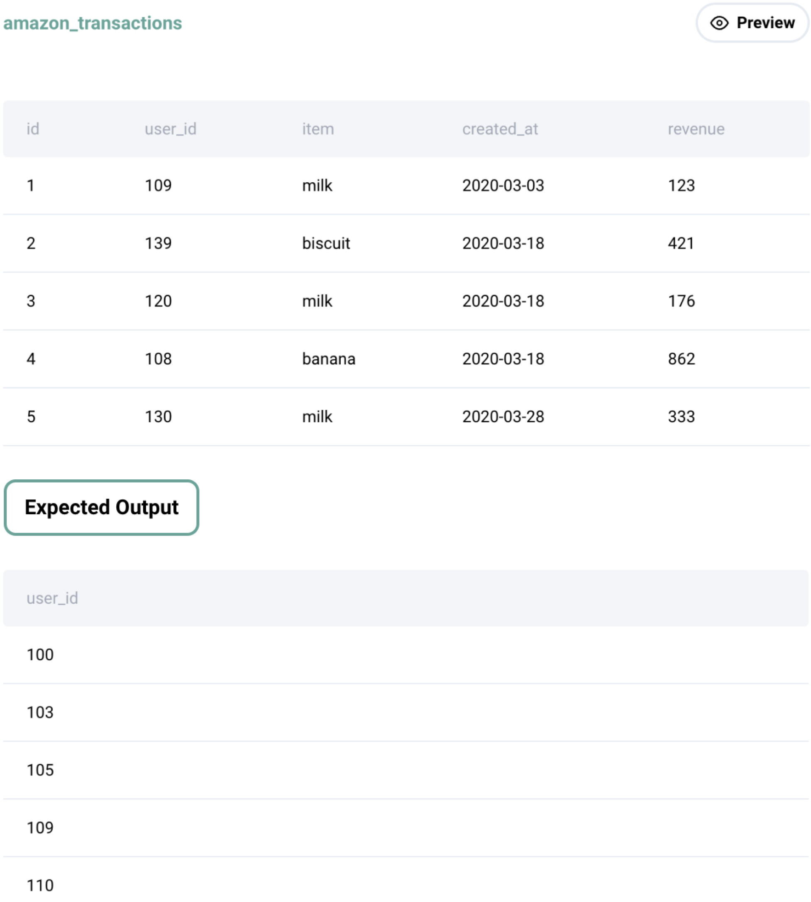

Question sourced from StrataScratch.com.
Database: MySQL
Write a query that'll identify returning active users. A returning active user is a user that has made a second purchase within 7 days of any other of their purchases. Output a list of user_ids of these returning active users.

/*
My strategy: For each user's set of purchases ordered by date, use
the LAG() window function to create a column for the previous row's
date, then derive a column for the number of days between purchases
by subtracting the previous date from the current date. Filter this
result set by rows with a date difference of 7 days or less, then
get the unique user IDs.
*/
WITH purchases_summary AS (
SELECT user_id,
DATEDIFF(created_at,
LAG(created_at) OVER (PARTITION BY user_id ORDER BY created_at)
) AS days_difference
FROM amazon_transactions
)
SELECT DISTINCT user_id
FROM purchases_summary
WHERE days_difference <= 7;